任务泛化
坐标规划无法统一“最近的椅子 / 过走廊后左转”。
点导航 · 物体导航 · 指令跟随。机器人输入只有：RGB、定位 / 目标点、文本。无地图、无激光。
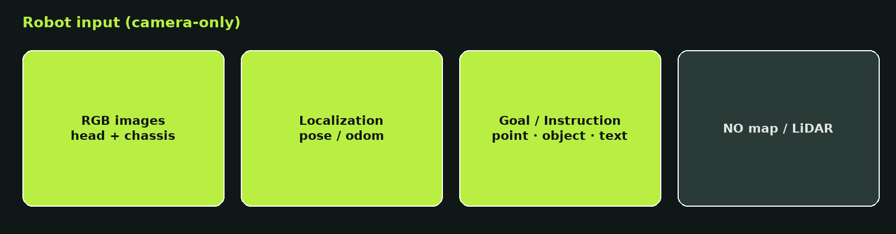
而在换任务、换本体就要重做接口。
坐标规划无法统一“最近的椅子 / 过走廊后左转”。
目标出视野 = 推断该去哪找，不是纯搜路。
Pixel Goal 落在图像，比直接控轮更接近本体无关接口。
相机完成语义 + 决策，降地图 / 激光 / 标定成本。
语义要看得远；运动要反应快。中间接口：Pixel Goal + Latent Goal。
指令 · 历史 · 当前视觉 → 方位 / 探索方向。
连续轨迹 · 局部避障 · 本体动力学。

问题驱动：打转、输出空间混乱、近场看不见脚边。
目标已在视野内仍左右扫、原地转。约束：可见点优先前进；看不见才转向哨兵；<1 m STOP。
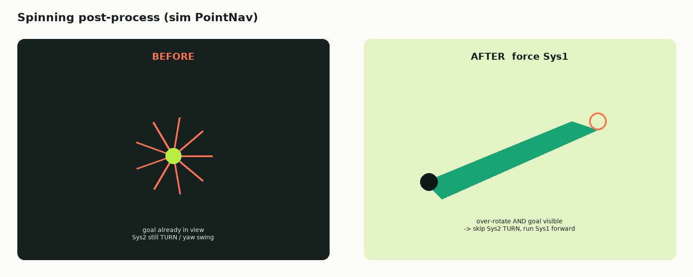
VLM 对像素方位强于机器人坐标。640×480 显式坐标系。点 / 物 / 指令都回归同一个 (u, v)。离散动作信息量低；纯 latent 不可解释。
[PointNav] Return exactly one pixel goal (u, v).
Prefer FORWARD … farthest navigable pixel.
(0,240) LEFT · (639,240) RIGHT · (320,479) STOP
头：高处物体。底盘：近场障碍 / 可行走。Pixel 坐标输出在底盘图。
位姿 + 深度 + 未来轨迹。无需逐帧点击。


最远可见点常贴障碍边缘。中心点、再加像素轨迹，是同一问题的两级约束。
| 模块 | 改动 | SR | 场景 |
|---|---|---|---|
| Pixel Goal | 最远可见 → 中心 pixel | 50% → 61% | 显著 |
| Pixel Goal | 仅中间点（500 ep） | 68% | — |
| Pixel Traj | 可见自由空间采样整条像素轨迹 | 65% → 72% | 500 测试集 |
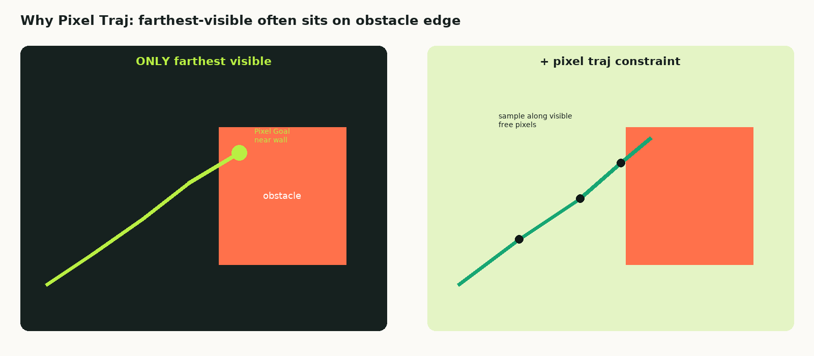
仿真 final point 通过率 53%，与 3 m local point 59% 接近 → 远程终点单独不够，需要局部点。
加载、历史、碰撞、本体尺寸。先看见失败，再改系统。
| 失败 | 改动 | SR | 场景 |
|---|---|---|---|
| 转弯摆动 | 历史位姿 + 语义条件进运动模块 | 54% → 56% | 转弯 |
| 大弯擦障 | 深度碰撞约束 | 56% → 64% | 大弯 |
| 复杂分叉选错 | 每 3 m 一个参考点 | 64% → 66% | 复杂场景 |
| 贴障碍过近 | 安全距离 30 cm → 10 cm | 66% → 78% | 近障 |
| 历史太稀、太旧 | 最近 80 帧、每 10 帧取 1 张 | ~+5 | 局部记忆 |
| 规划与执行同频 | 慢规划 + 快执行解耦 | 76% → 84% | 长时执行 |
没有近期位姿和语义条件，弯道里容易左右扫。加上之后转弯先涨 2 个点。
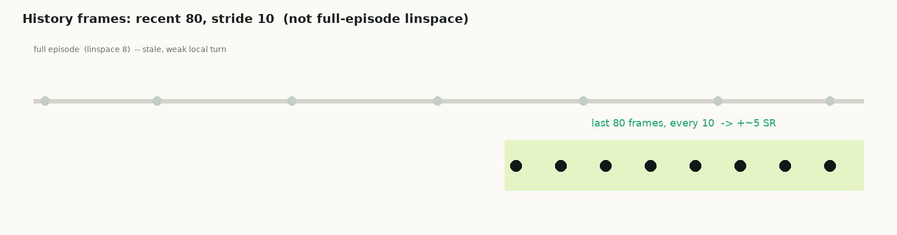
底盘深度变成鸟瞰点云，预测路点离障碍过近就惩罚。大弯提升最明显。仍会偶发倒退轨迹。
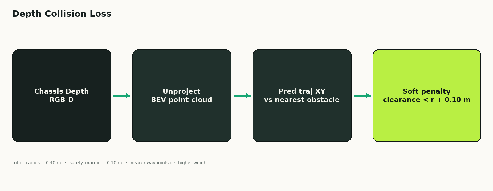
复杂路口单靠当前画面容易选错支路。稀疏参考点不绑死轨迹。只给最终点通过率 53%，3 m 局部点 59%。
语义规划出 Pixel Goal 后冻结；运动模块在锚点上高频更新。训练与推理同一套调度。
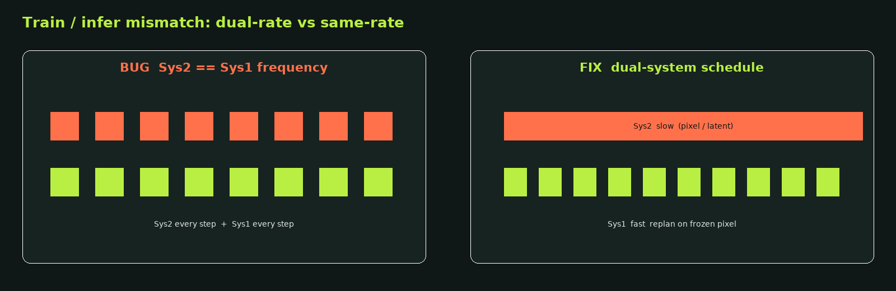
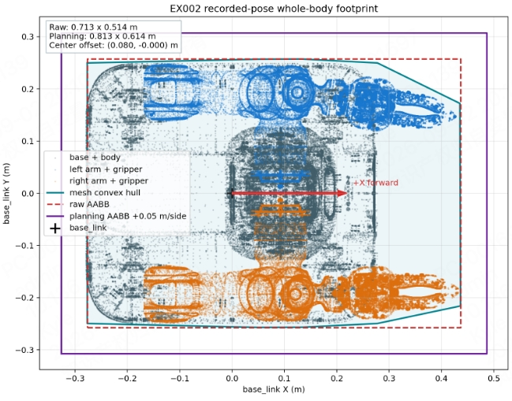
平滑拐点与局部外凸。

数据里放大本体宽度
深度进入碰撞约束
深度进模型 + 参考路径
环境步进偏串行。并行仿真后，评测才能喂满 GPU。
Latent queries 在 Sys2 学完并缓存，DiT 独立迭代。
两系统强绑定。
44 hSys1 加载特征独立训。
4.8 h 8.3×
主因：π 系列在机器人数据上已预训练。无需新建 DiT 头，一次前向出轨迹。
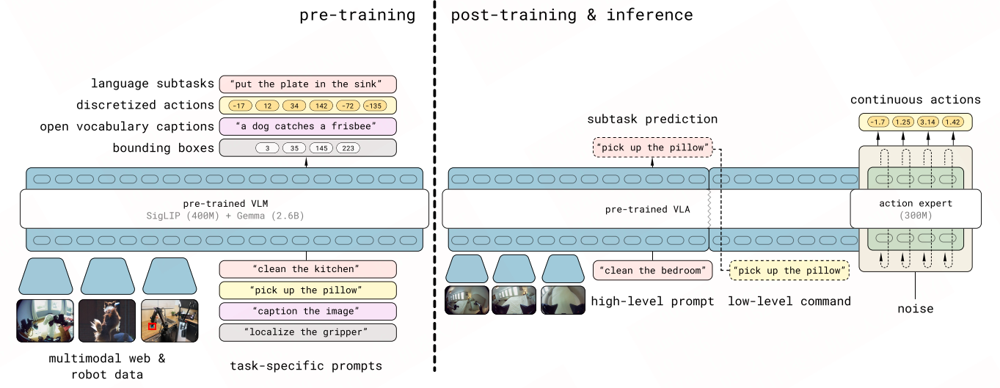
26 维 state 离散成文本 token，走语言模型通路（π0.5 原生），不是连续向量进 expert。
协议：WebSocket + msgpack。边端发 RGB/位姿，云端回密集轨迹。
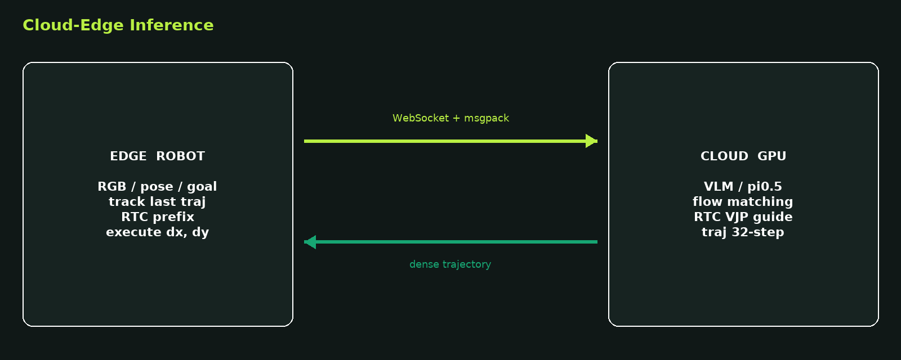
换 chunk 时 yaw 跳变。RTC：冻结 inference_delay 前缀，重叠区线性衰减引导。
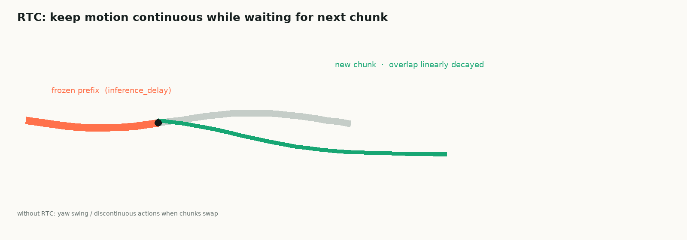
参考 AbotN1：多相机均可出 affordance / target pixel。先把相机放对。
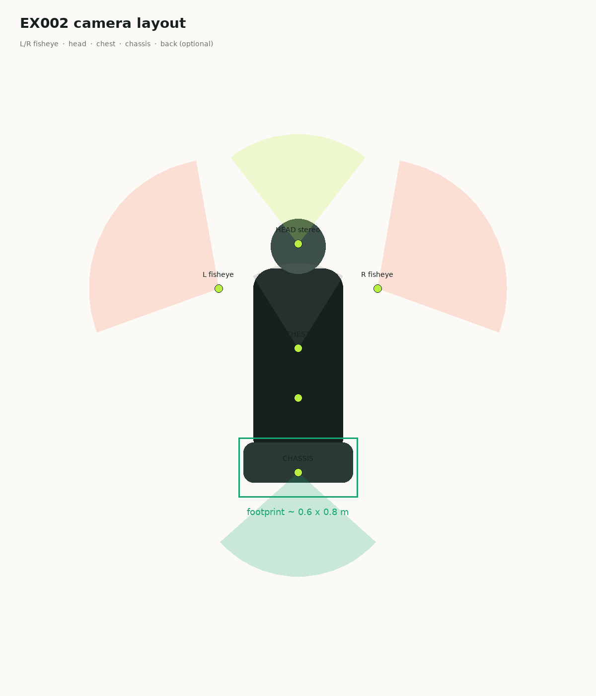
Sys2/Sys1 加环视，输出不变。
affordance + target。问题：各相机“最远可见点”不一致 → Sys2 歧义。
直接输出，让 Sys2 学，类似 AbotN1。
全局只留所有相机中最远的一个可见点，抑制其余 label。无歧义；难：模型要知道在哪张图出点，且与 object-goal 结构不一致。
footprint 投影到图：四顶点可见才取中心。矩形沿轨迹切线法向平移 → 可通行像素轨迹 → 采样 Pixel Goal。学的是可通行带，不是单点最远可见。
环视下除 STOP 外几乎总有 valid pixel，不再“看不见所以转”。转向改由 Sys1 学 dx, dy=0, dyaw≠0。
真实 footprint、碰撞、长时执行。
Sys2 Pixel Goal + Sys1 连续轨迹 + Bezier。矩形 footprint 0.70×0.60 m，stop 0.8 m：97 / 100。
上图是同一问题链上的逐步改动，不是和 97% NavArena 榜单混比。
| 设置 | 数据 | R2R Success | R2R SPL | R2R NE↓ | RxR Success | RxR SPL | RxR NE↓ |
|---|---|---|---|---|---|---|---|
| InternVLA | VLN-CE 100% | 79.43 / 62.81 | 72.75 / 62.81 | 2.54 / 4.16 | 68.59 / 59.55 | 58.24 / 50.11 | 3.99 / 4.73 |
| LoRA r32 | VLN-CE + 15K | 64.9 / 70.74 | 64.6 / 69.8 | 4.54 / 4.08 | 53.21 / 55.0 | 50.5 / 52.4 | 6.72 / 5.82 |
成功看能力边界，失败看 STOP / 窄道。
理解方位，不跟死参考轨迹。
持续更新局部目标。